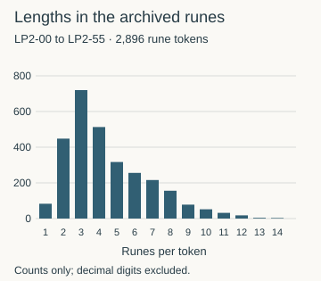
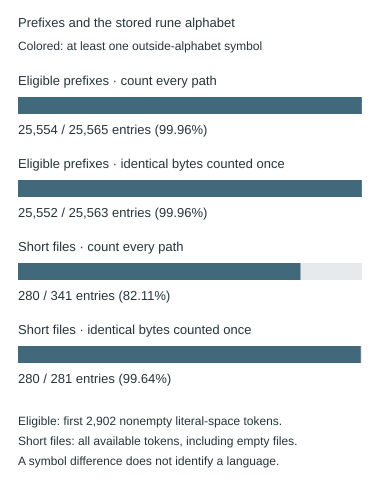
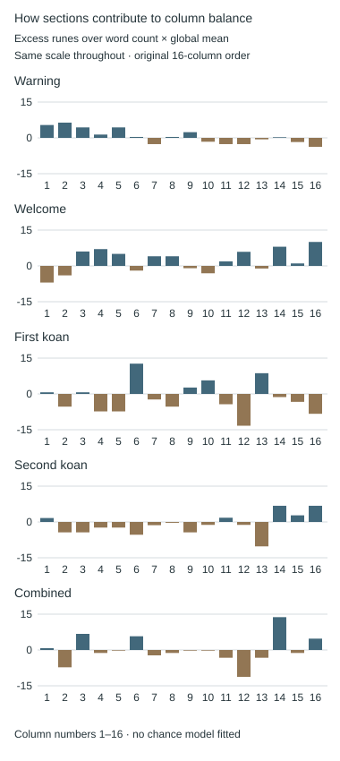

Word lengths and corpus comparisons
Count rune tokens, reconcile the 2896 and 2902 conventions, and separate manuscript measurements from English-corpus claims.
On this page
Word lengths can reveal structure that a one-rune-for-one-rune cipher preserves. Before comparing them with English, define the units and boundaries. A count of Latin letters, a count of runes, and a count that includes decimal labels can describe different datasets.
This guide answers three practical questions. What lengths are in the archived unsolved text? The first count gives the input rules and a download of every token. Why do older summaries disagree? The later audit isolates six decimal labels and other boundary choices. Does the distribution identify English? That requires a comparable reference corpus and a specified test; the raw histogram cannot answer it.
For the different question of runes per named section, including the reported equalities after omitting ᚠ, use the section-count audit. Some of those sections start or end partway through a manuscript page.
Count runes, not the letters in their labels
The rune labeled TH is one symbol. An illustrative encoding of THE as TH + E has length two; T + H + E has length three. Those are different spelling or conversion choices. An English reference corpus must use a documented conversion rule, not merely have its spaces and punctuation removed. See rune indices and labels and transcription layers.
Here, a token means a unit selected by a stated parsing rule. Calling it a token avoids assuming that every visible separator corresponds to an English word. A decimal label is visibly present, but it is not a rune.
A reproducible count for LP2-00–55
Our descriptive audit concatenates these archived pages in order, removes slash and newline wrapping, and preserves other delimiters. It includes headings and joins tokens across page boundaries where the transcription has no intervening delimiter. An internal apostrophe stays in its token and counts zero runes. Decimal numbers and the alphanumeric table do not contribute to the rune-only count.
Under those rules there are 2,896 rune tokens containing 12,956 runes. There are 448 tokens of length two (15.47%) and 720 of length three (24.86%). These are measured counts, not evidence by themselves of a particular cipher or a departure from English.

Joining pages matters. Parsing every page separately with the same within-page rules produces 2,928 pieces. The page-join sensitivity experiment isolates the 32 rune-to-rune edges responsible for this difference: it compares all joined, all separated and each edge split individually. Separating all candidates changes one-rune tokens from 83 to 99 and tokens of length ten or more from 109 to 104. These are alternate parsing rules, not verified word boundaries. The complete token ledger records the original start and end page and character offsets, including tokens that span pages under the joined rule.
The two-transcription sensitivity audit asks a separate question: do the 33 non-rune differences between archived seventh-onion and wiki text on LP2-00–55 move any of these token starts? Under this exact tokenizer, none does; both complete sources also yield the same ordered token lengths. This does not settle the page joins above or any punctuation-driven key-reset rule.
LP2-21: three consecutive lengths of 11, 11 and 10
On LP2-21, three consecutive rune tokens have lengths 11–11–10. They are tokens 1,167–1,169 in the joined LP2-00–55 ledger, not word numbers printed on the page. The exact pattern occurs once among the ledger’s 2,894 overlapping three-token windows. This is a descriptive count under the conventions above, not an English-language probability.
| Ledger token | Rune sequence | Length |
|---|---|---|
| 1,167 | ᚦᛖᚩᛄᚷᛋᛝᚣᛗᛟᚻ | 11 |
| 1,168 | ᛗᚠᚦᛉᚦᚫᛋᛈᚣᚩᚠ | 11: ten before the line wrap, one after |
| 1,169 | ᛈᛟᛋᛖᚫᛇᛗᛚᛈᚾ | 10 |
The middle token crosses a line wrap. Treating that wrap as a separator would split it into lengths 10 and 1 and erase the reported chain. Under the archived conventions, slash and line breaks are transparent while the surrounding hyphens delimit tokens. None of these three tokens crosses a page boundary or contains an apostrophe. The summary report now includes the matching tokens and their source offsets; the independent scanner checks the middle token’s 10+1 split.
A one-rune-for-one-rune cipher that preserves boundaries must preserve this length sequence. It does not follow that the three plaintext words have 11, 11 and 10 Latin letters: TH, NG and other multi-letter labels can represent single runes. Nor does this observation by itself reject English or establish a boundary-changing cipher. A comparison needs a frozen rune-conversion rule, a stated corpus and a rule for selecting unusual patterns. Choosing this chain after inspecting the page and then treating it as a preselected test would overstate its significance. No solved-text baseline or statistical significance result is claimed for this chain here.
Why an earlier summary has 2,902 tokens
The pinned historical summary is consistent with six additional length-one tokens. The archive contains exactly six isolated single decimal digits:
Including these as length-one tokens reproduces all fourteen length proportions and the summary’s mean, median, minimum, maximum, quartiles, sample standard deviation and variance to numerical precision. The count becomes 2,902 tokens and 12,962 counted units; the extra six units are decimal digits, not missing runes.
| Convention | Length-one tokens | Total tokens | Total counted units |
|---|---|---|---|
| Runes only | 83 | 2,896 | 12,956 runes |
| Runes plus six single digits | 89 | 2,902 | 12,956 runes + 6 digits |
This is a reconstruction consistent with the published summary, not proof of the original tokenization code’s intent. Its original per-token ledger was not available in the inspected repository. The difference also does not remove the reported contrast between two- and three-rune counts: those counts remain 448 and 720; only their denominator changes. The complete pinned-corpus comparison now reproduces that separate descriptive calculation with independent source and rank checks.
Which symbols occur across the complete reference corpus?
The complete symbol audit uses the same pinned source revision and first-2,902-token rule as the historical prefix comparison. It reads every source path, retains shorter files separately, and compares each selected character with our stored 29-rune alphabet. It does not remove headings, normalize characters or infer the missing conversion rules.
ᛂ (U+16C2, Unicode name RUNIC LETTER E) is the only character outside the stored alphabet in these selected prefixes. It occurs in 25,554 of the 25,565 eligible file-path prefixes. Eleven eligible prefixes contain only characters from the stored alphabet. The independent audit checks every source path and reconciles the byte hashes, eligibility flags and eligible-prefix length histograms with the earlier census.
| Population | Entries | Entries containing ᛂ | Occurrences of ᛂ |
|---|---|---|---|
| Eligible prefixes, every path | 25,565 | 25,554 | 538,869 |
| Eligible prefixes, distinct bytes | 25,563 | 25,552 | 538,842 |
| Short files, every path | 341 | 280 | 4,035 |
| Short files, distinct bytes | 281 | 280 | 4,035 |

What the two counts mean
Entries containing a symbol counts each selected prefix once, even if the symbol occurs many times. Occurrences counts each appearance. Path weighting counts every filename; distinct-blob weighting counts byte-identical files once. Neither makes different editions of the same work statistically independent.
Eligible prefixes contain exactly 2,902 selected tokens. Short files contribute only their available tokens to a separate population. Empty files belong to that short-file population and contain no characters; their absence of an outside-alphabet symbol is not evidence about a conversion convention.
What this changes about the comparison
A one-for-one relabeling of an extra symbol leaves every token length unchanged. Deleting it changes lengths and can create empty token slots. Dropping those slots changes the denominator; refilling the prefix changes which text is selected. These are separate choices, not interchangeable ways to clean the data. The twelve-file sensitivity example shows the distinction with explicit counts.
This audit identifies a reproducible difference between symbol inventories. It does not establish an intended converter, recover edition provenance, identify the manuscript language or supply a decryption rule. It inspects selected prefixes, not every character in every full text.
Reproduce and inspect
Extract the reference-data ZIP with folders intact. Use Python 3, Git, the Liberpedia reference files and a local source repository containing the pinned Git objects. The pipeline runs offline and executes no code from the source repository. Use a new output directory:
python scripts/run_corpus_symbol_audit.py SOURCE_REPOSITORY --output symbol-auditThe measurement stage saves source identities and per-blob checkpoints. The independent checker uses a different tokenization implementation, rebuilds every symbol count, checks duplicate rows, and reconciles byte hashes, eligibility and eligible-prefix length histograms with the earlier census. Only after those checks pass does the export stage create the tables and figure. Retain the report and receipt together.
Every file and its symbol counts (CSV) · Symbol totals (CSV) · Population counts (CSV) · Complete report (JSON) · Independent verification receipt. The pipeline script and its dependencies are included in the reference-data ZIP. The external corpus Git objects must be obtained separately; see the pinned-corpus reproduction instructions.
The earlier twelve-file check
The pinned Project Runeberg repository contains 25,906 files under files. We checked the first twelve filenames in Unicode lexicographic order, taking each file’s first 2,902 nonempty space-separated tokens. This is a deterministic convenience sample, not a random sample or a check of all books. Every selected file has enough tokens.
All twelve prefixes contain ᛂ (U+16C2), which is absent from our stored 29-rune alphabet. The historical script measures each token with Python’s len, so that symbol contributes to its length. This does not establish that the conversion is wrong: it establishes that its symbol inventory differs from the manuscript alphabet used in our audit. Dropping or substituting the symbol would change the experiment and needs a documented conversion rule.
| Corpus file | U+16C2 occurrences in first 2,902 tokens |
|---|---|
| 10002-8.txt | 15 |
| 10003-8.txt | 17 |
| 10004-8.txt | 17 |
| 10005-8.txt | 19 |
| 10006-8.txt | 10 |
| 10007-8.txt | 16 |
| 10008-8.txt | 14 |
| 10011-8.txt | 15 |
| 10012-8.txt | 12 |
| 10013-8.txt | 18 |
| 10014-8.txt | 51 |
| 10016-8.txt | 34 |
Within these prefixes, U+16C2 is the only character outside the stored alphabet; each occurrence is in a different token. A symbol-inventory difference alone does not invalidate a word-length comparison. If the converter intends this character to stand for one rune, a one-for-one relabeling leaves every token length unchanged. Determining the intended convention still requires the converter’s provenance.
Relabeling and deleting are different operations
We replayed two explicit variants on the same twelve prefixes. Replacing each out-of-alphabet character by one stored rune preserves every length, as expected. Deleting it shortens 10–51 tokens per prefix. This second variant illustrates the effect of filtering to the stored alphabet; it is not a proposed correction to the corpus.
For example, 10014-8.txt has 51 affected tokens in its first 2,902 token slots. The deletion variant removes 51 counted units and leaves six slots empty:
| Counting convention | Length 2 | Length 3 | Empty slots |
|---|---|---|---|
| Original characters | 668 | 498 | 0 |
| One-for-one relabeling | 668 | 498 | 0 |
| Delete U+16C2; retain slots | 669 | 516 | 6 |
The table retains the original 2,902 slots so that the comparison isolates character deletion. Dropping the six empty slots would change the denominator to 2,896; refilling the sample with later tokens would change its membership as well. Neither additional operation is included here. Across the twelve prefixes, deletion changes the length-two count by −1 to +5 and the length-three count by −5 to +18. A mean reduction or a histogram change is not itself a statistical significance result. The report retains both complete histograms for every file.
To reproduce, obtain a local clone of the pinned corpus repository, then run the command below from a Liberpedia checkout. The script reads committed Git bytes, avoiding checkout newline conversion. It does not execute the corpus’s code. A partial clone may need network access to fetch missing source blobs.
python scripts/audit_runeberg_prefixes.py /path/to/project-runebergDownload the audit script · Download the file hashes, counts and exact alphabet. The full prefix census and descriptive comparison are now independently checked. This does not reproduce an unavailable conversion pipeline or validate historical probability claims.
File entries are not independent texts
A separate audit of the complete pinned Git tree finds 25,906 corpus paths but 25,844 distinct file-content objects. This inventory covers every path; it does not decode or compute statistics for every text. We read the three repeated objects and independently compared the bytes at all 65 paths in those groups.
| Repeated content | File entries | Tokens per file | Eligible for a 2,902-token prefix? |
|---|---|---|---|
| Empty file | 61 | 0 | No |
11052-8.txt and 11502-8.txt | 2 | 144,714 | Yes |
13689-8.txt and 20041010-13689-8.txt | 2 | 109,251 | Yes |
The historical minimum-length rule would exclude the 61 empty files. It would retain both members of each nonempty pair, counting the same prefix twice. These two extra eligible entries are a known weighting issue, not a measured explanation of the reported manuscript differences. The later complete prefix census checks all 25,906 paths and finds 25,565 eligible paths representing 25,563 distinct eligible blobs. The other 341 paths are too short under that token rule; the empty files are only part of that excluded group.
Byte identity is narrower than literary identity: different editions or conversions of the same work can have different bytes. Conversely, a filename alone does not establish an edition, language, author or source. The pinned tree contains only its short README and the corpus files; it does not contain conversion code or an edition manifest. This records what is present at that revision, not what may exist elsewhere.
A faithful historical replay should preserve its file-by-file weighting and report these duplicates. A deduplicated comparison should be a separate variant with an explicit rule. Neither version supplies independent random samples merely because many files are present.
Reproduce the inventory
python scripts/audit_runeberg_inventory.py /path/to/project-runebergThe script reads committed Git metadata and one blob for each duplicate group; it does not run third-party code. A partial clone may fetch those blobs. The inventory report includes every duplicate path, object identifiers, SHA-256 hashes, byte sizes and the exact token rule. The raw NUL-delimited Git tree listing preserves the full path inventory. The audit script is included in the reference-data bundle. These checks do not reproduce the full corpus statistics or their reported probabilities.
What is needed for an English comparison?
The checked-in corpus script takes the first 2,902 space-separated tokens of each eligible text. It does not draw a random passage. Its call to process_word_counts omits the required word_count argument, so this revision needs repair before execution. The statistics script uses an inclusive left-tail comparison, distribution <= value. These details matter to an exact reproduction.
Liberpedia has reproduced the manuscript-summary match above and the complete pinned prefix comparison: 25,565 eligible file paths, 25,563 distinct eligible blobs, and all 23 measures under both weights. The independent checks cover source bytes and exact ranks; they do not validate reported language probabilities or an unavailable conversion pipeline. Further variants must freeze their corpus revision, conversion rules, exclusions and sampling method. Check whether introductory material remains, whether editions duplicate one another, and whether a first-passage sample represents the question you intend to ask. Changing to random passages would be a new variant.
A left-tail fraction asks how often a reference value is no greater than the observed value. A claim of excess needs an upper-tail comparison, with ties handled explicitly. Testing many lengths and statistics and reporting only the most striking difference introduces selection. Set the question, direction and selection correction before a new comparison; see null models and search space and bounds.
Two code repairs to declare before a replay
Our pinned-source code audit checks two specific defects. It uses small synthetic inputs and does not run the corpus or reproduce historical probability claims.
- Supply the requested prefix length. In
create_results(word_count), the call supplies onlyfilepathandinstance_name, althoughprocess_word_countsrequiresword_counttoo. Python argument binding rejects that call. The repair isprocess_word_counts(filepath, instance_name, word_count). - Use the dataframe passed to the helper.
check_empirical_p(pr_df, lp_df, statistic)readspg_dffrom global scope when calculating the corpus mean and tail fraction. Its suppliedpr_dfis unused. Without that global it raisesNameError; with a different global it silently uses the wrong distribution. Replace those twopg_dfreferences inside the helper withpr_df.
The default plotting entry point sets a global pg_df before calling the helper, so the second defect need not change that execution. It matters when the helper is reused or called with another distribution. This is a reproducibility hazard, not proof that the published numerical results are incorrect.
| Synthetic check | Inclusive left-tail fraction at 2 | Mean used |
|---|---|---|
| Supply [1, 2, 3], but global is [9, 9, 9]; original helper | 0/3 = 0 | 9 |
| Same inputs; parameter repair | 2/3 | 2 |
These are arbitrary test values, not observed word-length proportions. The inclusive comparison counts the tie at 2. The audit verifies the original source bytes against their Git blob identifiers, checks the missing argument, and extracts only the two arithmetic functions for the synthetic check. It does not import pandas, execute plots, or alter the archived source.
python scripts/audit_corpus_pipeline.py /path/to/lp_experiments/codeUse the pinned source directory. The audit script and saved report are included in the reference-data bundle. A changed source file is rejected rather than silently treated as the audited revision. A full replay still needs pinned package versions and explicit aggregation, quantile, missing-value and sampling conventions.
What does a length difference imply?
If a transformation emits exactly one rune for every input rune and leaves the boundaries fixed, it preserves token lengths. A substitution can change which runes occur without changing this histogram. But a mismatch with one prose corpus does not uniquely identify a length-changing cipher. Conversion choices, style, headings, number labels and boundary conventions may also affect the comparison. See cipher invariants.
The 464-word column-balance experiment concerns a different population and statistic: four solved LP1 sections arranged in sixteen columns. It does not establish an English baseline for the unsolved pages. Its within-section shuffle variant preserves each section’s length distribution; the section-order variant also searches every arrangement in both the observed data and the controls. They address different choices in the same LP1 comparison, rather than supplying three independent confirmations.
Reproduce the count and inspect every token
Extract the reference-data ZIP with its folders intact. Python 3 is sufficient; no corpus download, network access or third-party package is required for this audit.
python scripts/rune_word_lengths.py --check
python scripts/test_rune_word_lengths.pyThe first command reconstructs the reports and chart. The second uses an independent character scanner and checks every token against its original source span. Both checks passed. The measurement script, summary and source hashes, token ledger, and pinned historical CSV can also be downloaded individually.
To rebuild the local generated files after a deliberate change, run python scripts/rune_word_lengths.py --write. A changed input or counting convention defines a changed measurement; retain its provenance and compare it separately.
LP2-18: how two tokens become a 17-rune candidate
A proposed Fibonacci connection used a 17-rune sequence with prime-value sum 987. The sum reproduces, but the archived transcription places a clause separator inside that sequence. Under this guide’s token rules it is two tokens, not one long word.
| Archived token | Runes | Prime-value sum |
|---|---|---|
ᛠᛞᛇᛉᚳᛠᚩᛟᛖ | 9 | 565 |
ᛗᛈᛒᚦᛝᛋᚢᛡ | 8 | 422 |
| Artificial concatenation | 17 | 987 |
The relevant archived span is below. The first token crosses a / line-boundary marker, which is removed when reconstructing a word across manuscript rows. The dot before the second token is a clause separator and must remain a token boundary:
ᛠᛞᛇᛉᚳ/
ᛠᚩᛟᛖ.ᛗᛈᛒᚦᛝᛋᚢᛡIn the archived UTF-8 text decoded to Unicode, the first token starts at character offset 84, the dot is at 95, and the second token starts at 96. These offsets are zero-based; they refer to the exact archived text, before removing line markers. Inspect the transcription and the original page. This is a check of the archived notation, not a new manual verification of every mark in the image.
Reproduce the boundary and sums
Run this Python from the extracted reference-data bundle or repository. It checks the separator as well as the arithmetic, so a matching total cannot hide a changed input:
import json
from pathlib import Path
raw = Path('text/lp2-18.txt').read_bytes().decode('utf-8')
alphabet = json.loads(Path('data/index.json').read_text(encoding='utf-8'))['alphabet']
prime = {entry['rune']: entry['prime'] for entry in alphabet}
left = 'ᛠᛞᛇᛉᚳᛠᚩᛟᛖ'
right = 'ᛗᛈᛒᚦᛝᛋᚢᛡ'
joined_rows = raw.replace('/', '').replace('\n', '')
assert left + '.' + right in joined_rows
assert raw[95] == '.' and raw[96:104] == right
for token in (left, right, left + right):
print(len(token), sum(prime[rune] for rune in token))
# 9 565
# 8 422
# 17 987987 is a Fibonacci number, but here it is the sum of a deliberately joined pair. That fact does not make the pair a single word, prove its ordinal in a section, or establish a cipher key. A study of adjacent-token sums could include it legitimately if that population and boundary rule were declared in advance. It would need to include all eligible pairs, not only the pair with an appealing total.
The transcription-checking guide explains how formatting-only differences can change a word-based experiment while leaving the whole-page rune stream unchanged. For a different question, the Fibonacci opening experiment tests a specified sequence as shifts against fixed opening texts. Neither result settles every Fibonacci-based proposal.
Sources and status
Manuscript inputs are the archived LP2-00–55 transcription files, each hashed in the report. The historical summary and code are pinned to mae3301/lp_experiments, revision cb5cdb9. The referenced corpus is Project Runeberg, revision a39e87e; the prefix audit processes only the twelve specified prefixes, while the separate tree inventory covers every path and decodes only the three repeated content objects. Counts and the summary reconciliation were checked on 20 October 2026.
A short-header example: BEING and THUS
The LP2-39 header-crib experiment tests twenty proposed words against three red runes. BEING needs four or five runes under the exact stored GP labels: EI is not one of those labels. THUS can use three or four. After this length check, seventeen segmentations remain for a complete affine-key search. WHY fits one key, but the three-symbol fit does not establish the reading. The experiment retains every rejected candidate and explains what a test beyond the header would need to show.
Word-local ciphers and repetition
The word-reset repetition experiment uses a deliberately different selection: separate pages, omit each page’s first and last token, and compare the remaining ciphertext tokens of at least four runes. It finds no exact repeats under either apostrophe policy and only four anagram pairs, all length four. Its explanation distinguishes a shared deterministic word function from a shared symbol substitution followed by word-local shuffling. Neither result proves that the unknown plaintext must repeat.
Could the plaintext be another language?
The eight-language parallel-corpus experiment compares the same FLORES passages in English, Welsh, German, French, Spanish, Italian, Portuguese and Finnish. English is closest by word lengths; the order of other close candidates changes with the symbol representation. The report separates this conditional ranking from IoC and repeated-letter comparisons, and includes source files, a chart and offline reproduction scripts. These scores do not identify the plaintext language.
For the limits of this language comparison on actual manuscript prose, see the known-LP reading control. Its pool and individual sections can rank differently. The equal-token control compares samples of exactly 2,896 tokens: English remains the manuscript’s nearest tested profile, but the manuscript is farther from each language profile than that language’s observed reference samples. The language-comparison overview explains how all four related records fit together.
Does the 464-word balance depend on mixing sections?
The section-preserving variant keeps the same observed arrangement but shuffles lengths only within each section’s original slots. It still finds low column-mean variance under that model: 88 of 49,999 trials are at least as flat, giving a plus-one lower-tail estimate of 0.00178. The shared-scale histograms and slot map show what changes from the unrestricted baseline.
This is sensitivity to a null-model assumption, not independent confirmation. Both comparisons use the same previously selected arrangement and neither preserves coherent sentences or accounts for the original search over arrangements.
The unchanged-rune audit separates ordinary fixed points from recorded interruptions across the four LP1 sections. An equal input and output index does not by itself show that the key counter paused.
The six-width comparison tests a separate choice in the solved 464-word arrangement. It selects the smallest normalized imbalance across widths 2, 4, 8, 16, 32 and 64 and repeats that selection in every shuffled control. Its 0.12072 tail applies to that rule; it is not an adjustment of the smallest fixed-width p-value.
How do the four sections combine?
A balanced total can conceal differences that cancel. For each column, take the rune count supplied by one section and subtract the number of its words in that column multiplied by the overall mean, 1,796/464 runes per word. This gives that section’s excess rune count. Positive bars contribute more runes than this reference predicts; negative bars contribute fewer. Adding the four bars for a column gives the combined column’s excess.

To quantify the addition, square each column’s excess and sum over the sixteen columns. The four section totals add to approximately 1,620.38 runes², while squaring after the sections have been combined gives exactly 501 runes². The difference comes from pairwise cross terms: opposite contributions cancel, while contributions with the same sign reinforce one another. This identity describes the observed arrangement; it is not a probability or a measure of deliberate design.
If a column receives +3 excess runes from one section and −2 from another, their separate squares sum to 13. Their combined excess is +1, whose square is 1. The missing −12 is the cross term 2 × 3 × (−2). The downloadable report applies this same identity to every column and all six section pairs, with exact fractions.
The combined value also checks against the original balance statistic: its saved integer score is 128,256, and 128,256/16² = 501. The earlier shuffle experiments assess particular chance models; this breakdown explains the arithmetic of the observed score without adding a new test.
Extract the reference-data ZIP, retain its folders, and run python scripts/audit_section_contributions.py --output my-section-contributions.json with Python 3. The script rebuilds the original word inventory, checks the column totals by direct ordinal assignment, and verifies every pair contribution through a direct word-pair expansion. It performs no random trials. Exact counts and contributions (JSON) · Audit script · Figure script.
The proposed 928-word carrier
The carrier and word-matching guide contains the complete LP2-23–39 inventory, group-boundary diagram, halfway split and downloadable audit. The total is 928 rune-words; five decimal labels are counted separately. A matching total does not specify a grille operation.
Can a word identify a unique position?
In the solved 464-word arrangement, 216 ciphertext positions have a word form that occurs elsewhere in the same object. The word-lookup audit explains the difference between distinct forms and ambiguous positions, with the full occurrence lists and a comparison to decoded rune text.
For the broader approach and its other variants, see the language and corpus identification guide.
Manuscript pages discussed
LP2-10 · LP2-36 · LP2-37 · LP2-38 · LP2-18 · LP2-21